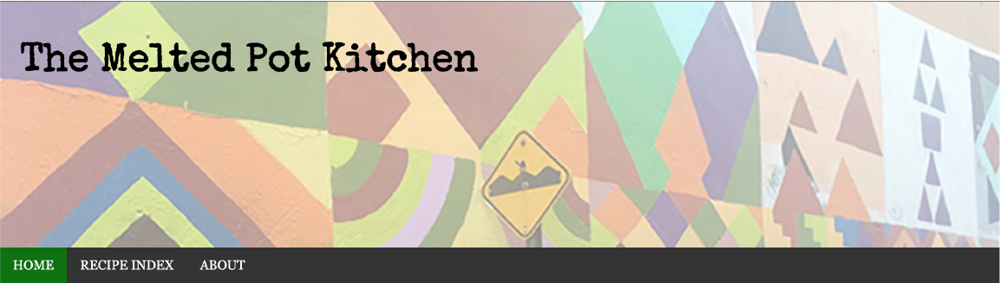

umich school of information masters student | intern for hire
Website: The Melted Pot Kitchen
Overview
I spent a semester fortifying my web design skills by building The Melted Pot Kitchen, a simple recipe site I intend to flesh out this summer for the purpose of sharing family recipes with friends and family.
Features
Styling & Font resources
The site utilizes several kinds of html layout techniques, including grid and flexbox on different pages; it also utilizes both relative and absolute measurements to create an accessible yet appealing layout across many screens.
It also implements an animated flipcard for the recipes featured on the main page, allowing for an uninterrupted experience of the content and photography with further information attractively displayed in detail with just a hover.
It also takes advantage of online API resources for fonts and icons with Google Fonts and FontAwesome.
Responsive design
The site is styled for three different screen size spans (mobile, tablet, and desktop) to maintain all functionality and stylistic appeal no matter which device is used to access the site.
JavaScript Features
Melted Pot currently takes advantage of three JavaScript features across the site: On individual recipe pages, ingredients and instructions are separate and contained in an animated accordion feature. The recipe index page
Accessibility
The site passes all WAVE accessibility checks, all axechecks, and includes a "skip to content" feature which appears on screen with tabbing.
Future Directions
For real implementation amongst friends and family, I intend to implement pdf links of all the recipes, password protection, and an account-based recipe favorite system. If the site grows beyond ~50 recipes, I'd also like to implement a true search function.